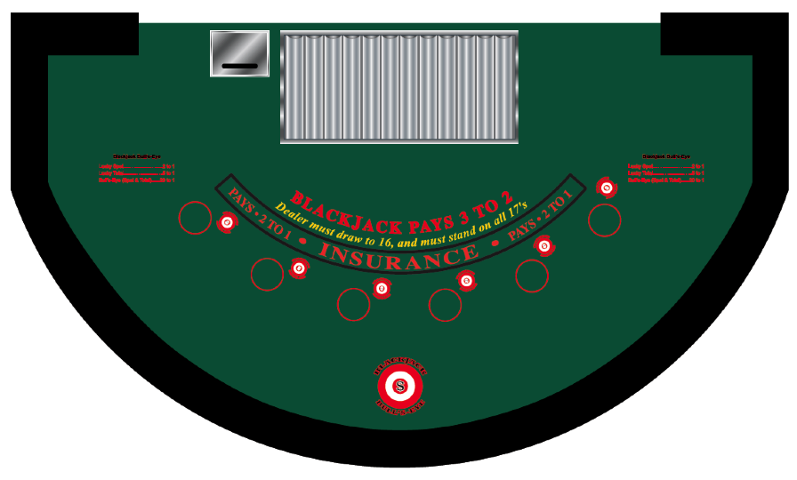

Blackjack Bull's-Eye is a side bet for the casino table game of Blackjack.
The Rules
Here is where you can learn to play Blackjack Bull's-Eye
The Odds
Here is where you can find all the odds for Blackjack Bull's-Eye
Let's Play
Here is where you can learn where to play Blackjack Bull's-Eye
How To Play Blackjack Bull's-Eye

Blackjack Bull's-Eye is a side bet for the casino table game of Blackjack.
The game is played using an automated dice shaker, a standard 6-sided die with pips and a 20-sided die numbered 1 to 20. The number 1 on the 20-sided die represents a Blackjack/21.
Prior to any cards being dealt, a patron must first make a wager on the regular Blackjack hand in order to place a Blackjack Bull's-Eye wager. The Blackjack Bull's-Eye wager is placed in addition to the patron's main wager in the designated betting circle.
Once wagering is closed the automated dice shaker will be activated, the dice will tumble and the Dealer will announce the outcome. After the first two cards are dealt, the Blackjack Bull's-Eye wagers will be settled then the regular game of blackjack will be played.
Definitions
The Lucky Spot wins if there is a wager on the spot that has been rolled on the 6-sided die (1 to 6). If there are seven spots on the layout the 7th spot will also win if a 6 is rolled and lose if it is not.
The Lucky Total wins if there is a wager on any spot where the total of the first two cards equals the number selected (1 to 20) For the purposes of this bet, Aces may be counted as either 1 or 11, so that players with Aces in their hands will win if either their "soft" total or their "hard" total is selected.
The Bull's-Eye wins if there is a wager on the Lucky Spot rolled with the 6-sided die (1 to 6) AND a Lucky Total is obtained when the first two cards equals the number rolled with the 20-sided die (1 to 20).
The Lucky Total wins if there is a wager on any spot where the total of the first two cards equals the number selected (1 to 20) For the purposes of this bet, Aces may be counted as either 1 or 11, so that players with Aces in their hands will win if either their "soft" total or their "hard" total is selected.
The Bull's-Eye wins if there is a wager on the Lucky Spot rolled with the 6-sided die (1 to 6) AND a Lucky Total is obtained when the first two cards equals the number rolled with the 20-sided die (1 to 20).
Wagers
A patron wagering on more than one position may make a Blackjack Bull's-Eye wager on each hand played.
Wagers are paid and/or taken in order pursuant with the established pay table.
Wagers are paid and/or taken in order pursuant with the established pay table.
Blackjack Bull's-Eye Payouts
| Lucky Spot | 2 to 1 |
| Lucky Total | 5 to 1 |
| Bull's-Eye | 20 to 1 |
Irregularities
All irregularities are resolved at the discretion of the Casino Operator. The Casino Operator will not violate the above rules to resolve the irregularity.
Where To Play Blackjack Bull's-Eye
I am currently looking to place this game in a casino for field trial.
Mobile: (705) 345 0561
Email: rondeau4@sympatico.ca
Blackjack Bull's-Eye is owned by Skyward Gaming Patent Pending